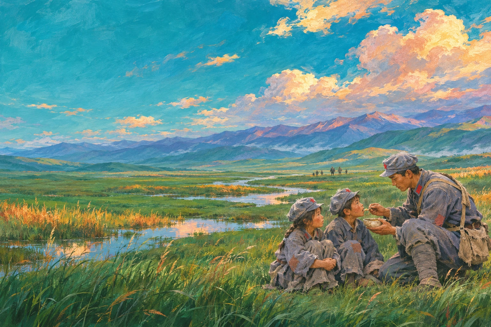

选一张故事画面，说说你记住的那个细节。

九岁的向轩和伙伴们既要赶路，也要承担勤务、传递消息。他后来担任通信班副班长。
故事依据用户提供的《长征路上的通信员》演示文稿及以下公开资料整理。交互按钮、通信包与彩色场景属于教学展示设计。首页地图为主题示意，不代表精确行军轨迹。
少年经历、通信班、雪山与草地故事的主要核对来源。
原演示文稿提供的长征背景资料。
原演示文稿提供的背景资料。
灰蓝布军服、红领章、八角帽和红五星等视觉元素的参考。军服细节用于时代形象创作，不代表对向轩个人服装的精确复原。
主视觉参照少年向轩的年龄、瘦小身形、宽大军装和挽起袖口等文字描述，以 AI 生成。面容为艺术想象，非向轩本人历史照片，也不作为史料使用。首页地图、雪山与草地场景均为新生成的AI绘本插画，不是历史影像。
影片从用户原 PPT 内嵌媒体提取，保留完整内容，仅作网页播放压缩，含 AI 情景再现。网页未将其作为历史影像。人物主视觉已重新生成，未使用 PPT 内的低清截图。
行动卡只尝试保存在当前浏览器，不向服务器提交个人文字。
请启用JavaScript使用场景互动。页面跳转、故事正文与影片可直接浏览。